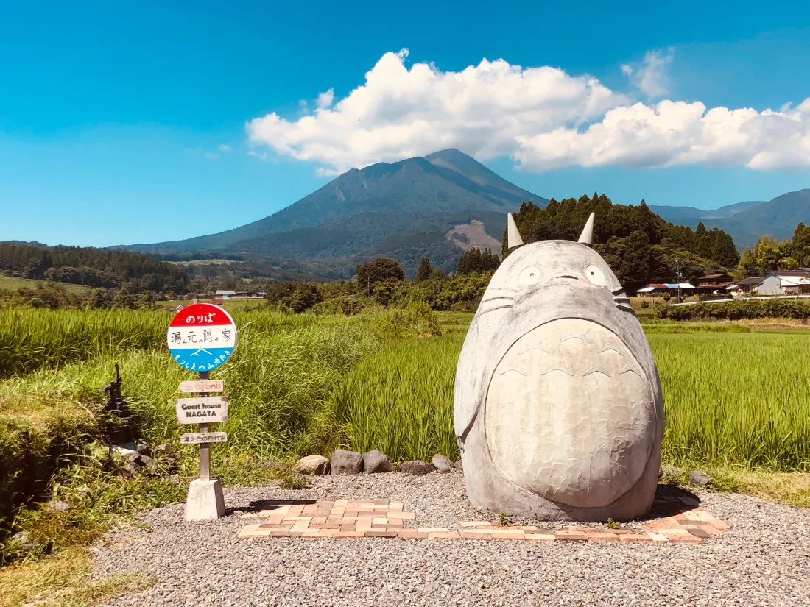
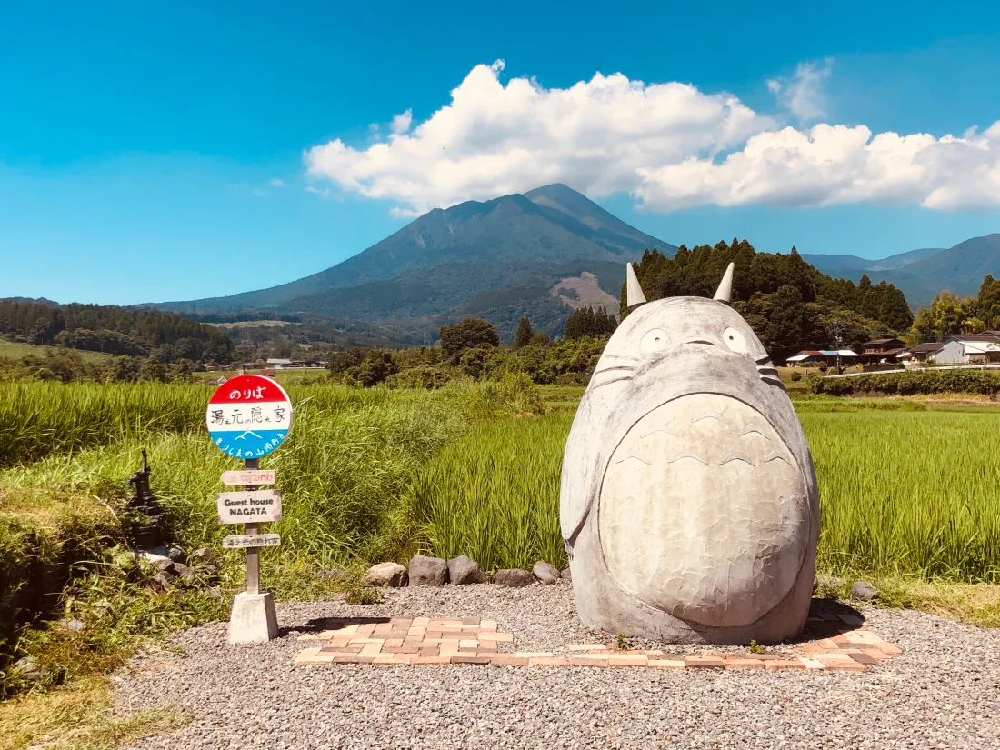

In Japan, camphor trees (樟, kusu) are deeply symbolic, representing longevity, resilience, and spiritual protection. As one of the nation's most revered trees, they are often found near shrines and temples, embodying sacredness and connection to the divine. Their evergreen nature signifies enduring life and vitality, while their massive size and long lifespan evoke strength and permanence. Camphor trees are also associated with healing and purification, as camphor oil has been traditionally used for medicinal purposes. In Japanese mythology and folklore, these trees are considered a dwelling place for kami (spirits or deities), further solidifying their role as a bridge between the natural and spiritual worlds. (AI Generated)
The Sayama Hills Shrine, nestled in the lush greenery of the Sayama Hills on the border of Tokyo and Saitama Prefecture, is a serene and lesser-known sanctuary that embodies the harmony between nature and spirituality. Surrounded by dense forests and tranquil trails, the shrine is a place of quiet reflection, often visited by hikers and locals seeking respite from urban life. Its modest architecture blends seamlessly with the environment, featuring traditional wooden structures and a peaceful atmosphere that invites contemplation. The shrine is dedicated to the protection of the natural landscape, aligning with the reverence for nature often found in Shinto beliefs. Visitors are drawn not only to its spiritual ambiance but also to the scenic beauty of the Sayama Hills, making it a hidden gem for those seeking cultural and natural immersion. (AI Generated)
The Totoro Wish Station is a whimsical and enchanting spot nestled at the edge of a serene forest, designed to evoke the magical charm of the beloved Studio Ghibli character. The station features a cozy wooden pavilion with a thatched roof, surrounded by vibrant greenery and adorned with hand-carved Totoro figures peeking playfully from the foliage. A large, friendly Totoro statue stands at the center, holding a mailbox where visitors can leave handwritten wishes on small wooden plaques, known as *ema*. Lanterns shaped like soot sprites gently illuminate the area, creating a magical glow during twilight. The air is filled with a sense of wonder, as wind chimes tinkle softly in the breeze, completing the atmosphere of childlike awe and hope. The Totoro Wish Station invites dreamers of all ages to pause, connect with nature, and leave their dreams in the care of this gentle forest spirit.